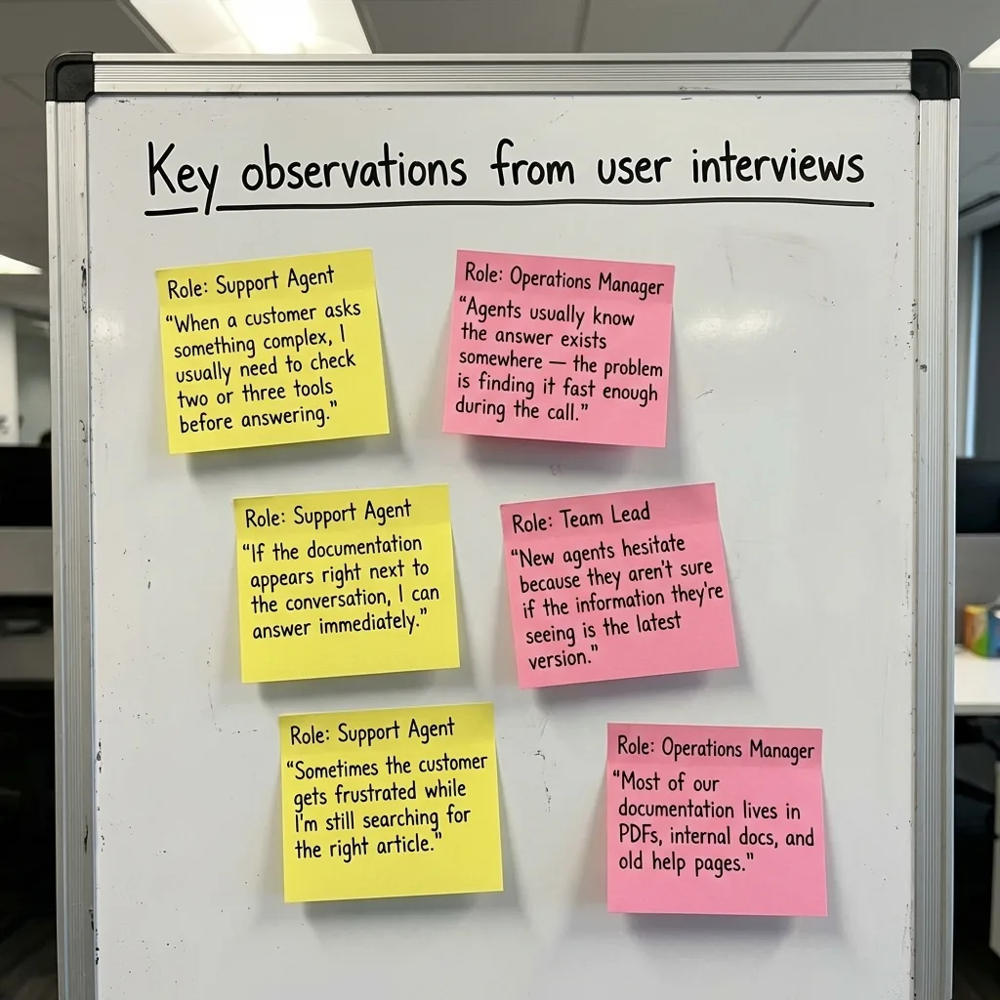
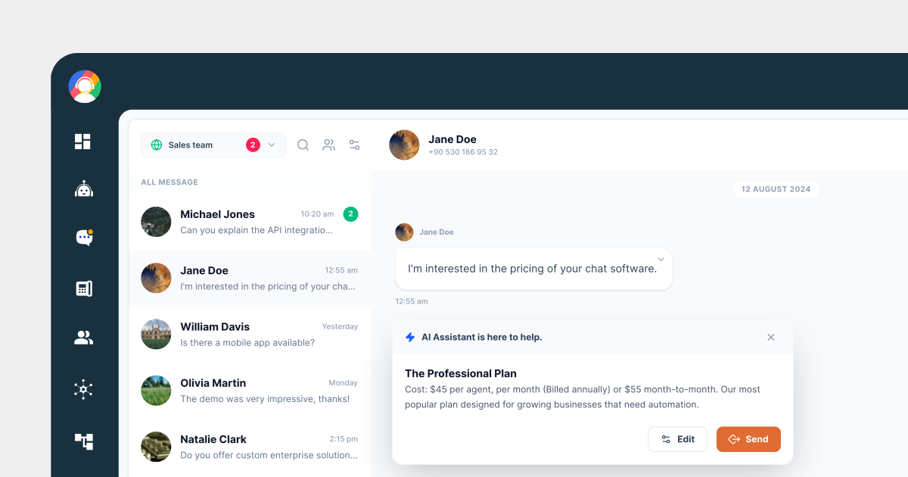
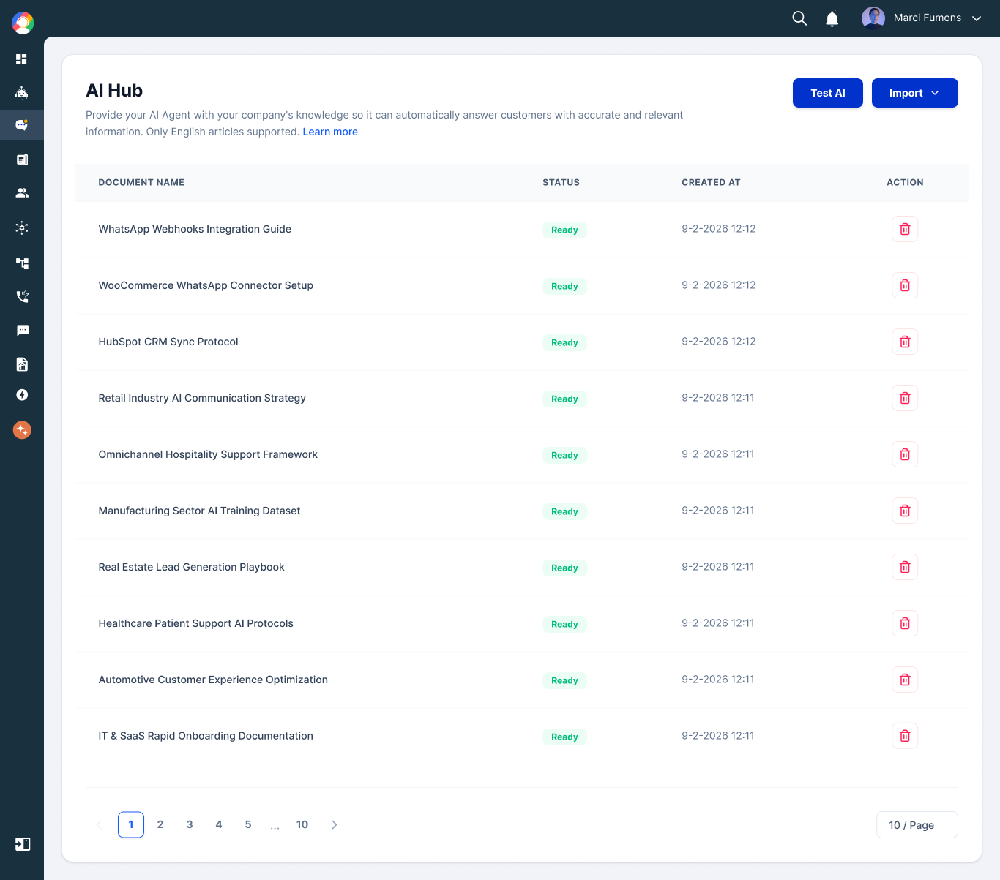

Designed an AI knowledge hub for faster support replies insights
Overview & Context
Support teams handle hundreds of customer conversations every day. Many of those conversations include the same types of questions — about pricing, integrations, onboarding steps, or product features. The answers usually exist somewhere in documentation, but agents often struggle to find them quickly while a customer is waiting.
I designed AI Hub, a knowledge layer that connects company documentation directly to the conversation interface. It allows agents to generate accurate responses using AI without leaving the chat thread. The goal was simple: help agents answer complex questions faster while keeping the conversation natural and accurate.
Role
Product Designer / UX Lead
Responsibilities
UX Research, Interaction Design, UI Design,
Engineering Collaboration
Team
Product Manager, 2 Engineers, QA
Impact
73% agent adoption in 6 weeks, avg. response time down to ~55 seconds

Problem
During live conversations, support agents frequently needed to search documentation to answer customer questions.
This required leaving the chat interface, opening a browser, finding the right document, scanning for the relevant section, and then returning to the conversation. Every step broke the agent's focus and made the customer wait.
As a result:
Response times increased: Agents lost time switching between tools while customers waited for answers.
Answers varied between agents: Without a shared, in-context knowledge source, responses depended on individual memory and experience.
New agents struggled most: Without deep product familiarity, new team members couldn't provide accurate responses without extensive searching.
The core issue was not missing information. The information existed but was not accessible in the moment when agents needed it.
Design Goals
The design focused on two connected experiences: admins needed an easy way to import and maintain knowledge, and agents needed immediate access to that knowledge during conversations.
Goal 1
Surface AI assistance inside the conversation so agents never need to open another tool to find an answer.
Goal 2
Make knowledge import simple — admins should add documentation with a URL or file upload, no technical setup required.
Goal 3
Maintain human control over every AI response
Agents review and edit AI suggestions before sending — accuracy and trust stay with the human.
Research & Insights
I conducted interviews and observation sessions with 11 participants — support agents, team leads, and operations managers — and observed live conversations to study how agents searched for information during customer interactions.

⚡ Speed mattered more than anything
Agents could answer most questions correctly if they had access to the information — but switching between tools slowed them down significantly.
💬 Context builds agent confidence
When information appeared directly next to the customer message, agents responded more confidently and with less hesitation.
🗂 Knowledge import was the biggest barrier
Documentation lived across websites, PDFs, and internal files. Admins needed a simple way to bring company knowledge into the system without technical setup.
Two User Perspectives
AI Hub needed to serve two distinct users with different goals. Agents needed help in the moment, while admins needed control over the knowledge foundation. Both experiences had to work seamlessly together.
Two roles — each with a different relationship to knowledge
Support Agent
"I know the answer is in the docs somewhere, but I can't go searching while a customer is waiting. It makes me look like I don't know the product."
Admin / Team Lead
"Our documentation is spread across the website, Google Drive, and three different PDFs. Getting all of that into one place feels like a project in itself."
Key Insights
Interviews and live observation sessions revealed consistent patterns across support teams of different sizes and industries.
Insight 01
Speed mattered more than anything else
Agents could answer most questions correctly if they had the information — but switching between tools added enough friction to slow down every conversation.
Insight 02
In-context answers built agent confidence
When information appeared directly next to the customer message, agents responded faster and with more confidence. Leaving the interface to search created hesitation and inconsistency.
Insight 03
Importing documentation was the biggest adoption barrier
Documentation lived across websites, PDFs, and internal tools. If setting up the knowledge base felt complicated, teams simply would not maintain it.
Key User Needs
Support Agent
Pain: Had to leave the conversation to search documentation, losing focus and making customers wait.
Consequence: Response times increased, answers varied between agents, and new team members struggled most.
Need: AI-generated answer suggestions that appear directly inside the conversation, ready to review and send.
Admin / Team Lead
Pain: Company knowledge was scattered across websites, PDFs, and internal files with no central place to manage it.
Consequence: Knowledge bases became outdated quickly, leading to inconsistent or incorrect AI responses over time.
Need: A simple import flow (URL or file upload) with visible status so knowledge stays accurate and up to date.
Design Strategy
Remove friction from knowledge import — admins should be able to add documentation using a simple URL or file upload, with no technical setup required.
Surface AI assistance inside the conversation — agents should never need to open another tool to find an answer while a customer is waiting.
Maintain human control at every step — agents review and edit AI-generated responses before sending so accuracy and trust stay with the human.
Provide visibility into knowledge status — admins should always know what information the AI is using, with clear processing status and timestamps in the knowledge table.
Solution
The final solution included three main components working together: Knowledge Import for admins, Reply with AI for agents, and a Knowledge Base Management view to maintain accuracy over time.
Solution Overview
1. Knowledge Import
Admins can import documentation by adding a website URL or uploading files such as PDFs. Imported content appears in a knowledge table with a visible processing status so admins know when the AI has learned from the document.
2. Reply with AI
Agents can generate a response directly from a customer message. The AI reads the message, searches the knowledge base, and generates a suggested reply inside the conversation thread. Agents can edit or send it immediately — the entire workflow stays inside the chat interface.
Feature 1
Reply with AI
Agents can generate a response directly from a customer message using the Reply with AI option. The AI reads the message, searches the imported knowledge base, and returns a suggested reply — directly below the customer message inside the conversation thread.

AI reply in action
Design rationale
By keeping the AI suggestion inside the chat thread, agents never lose context. They can review the response, make edits if needed, and send — all without switching tabs or tools.
This approach keeps the entire workflow inside the chat interface, preserving the natural conversation rhythm for both the agent and the customer.

Feature 2
Knowledge Import
Simple import, visible status
Admins can add documentation by entering a website URL or uploading files such as PDFs. Imported content appears in a knowledge table with a visible processing status, so admins always know what the AI has learned and when.
Feature 3
Knowledge Base Management
Admins can see all imported documents in a structured table with status indicators and timestamps. This helps them identify outdated content and keep the knowledge base accurate as the product evolves.

Status indicators — Each document shows its processing state so admins know which content is live and which is still being indexed.
Timestamps — Admins can see when content was last imported, making it easy to identify documentation that may be outdated.
Structured table layout — A clean, scannable view of the entire knowledge base so admins can manage documentation without any technical knowledge.
Results
0% to 73% weekly AI reply adoption in 6 weeks
Agents adopted the Reply with AI feature rapidly because it fit directly into their existing workflow without requiring any behavior change.
Average response time decreased from 2–4 minutes to ~55 seconds
Agents no longer needed to leave the conversation to search for answers, dramatically reducing the time customers spent waiting.
Consistent answers across the team
With all agents drawing from the same knowledge base, response quality became more uniform — regardless of individual experience level.
Faster onboarding for new agents
Because knowledge surfaced directly inside conversations, new team members could respond accurately even without deep product familiarity from day one.
What I Learned
AI features succeed when they integrate into existing workflows
Placing AI assistance inside the message actions meant agents did not need to change their behavior. The tool fit into how they already worked rather than asking them to adopt a new process.
The onboarding experience determines adoption
If importing documentation feels complicated, teams will not maintain their knowledge base. Simplifying the import flow and making processing status visible removed the biggest barrier to getting started.
Human control builds trust in AI systems
Giving agents the ability to review and edit AI responses made them more comfortable relying on the feature. Trust was not built through accuracy alone — it came from giving users a sense of control.